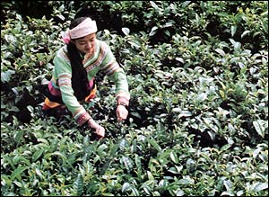

BLACK TEA
Known as "red" tea in China (for the color of its infusion),
black tea is the world's most common tea - found in tea bags, iced tea,
"ready-to-drink" beverages, and, more rarely, in high quality
full-leaf specialty products.
The distinctive color and flavor properties of black tea are produced
through a process of oxidation (also known, erroneously,
as "fermentation"). Like an apple or banana that turns brown
when cut or bruised, tea leaves oxidize from green to coppery red after
being rolled and crushed to expose their juices to the air. When the
desired color, aroma and flavor have been achieved, oxidation is arrested
through heating and drying.
Originating in China, black teas are now produced in dozens of countries
throughout the world, including: India, Sri Lanka, Kenya, Georgia, Turkey,
Argentina, Iran and even the United States.

TEA PLUCKING,
Yunnan province, China
CLOSE
WINDOW